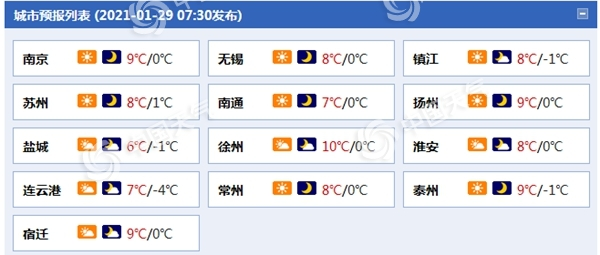

中国天气网讯 预计，今明两天（1月29日至30日），江苏以晴到多云为主，气温渐升。后天，阴雨天气再度发展，淮河以南地区阴有小到中雨，公众雨天出行请注意交通安全。
昨天，冷空气影响江苏，大部地区气温下降，并伴有大风。监测显示，下午14时，只有西南部地区气温超过10℃，北部部分地区仅有5℃左右，天气较冷。今晨，江苏大部气温降至冰点以下，有冰冻。
今明天，江苏以晴到多云为主，气温渐升。江苏省气象台预计，今天全省晴到多云，全省偏南风3-4级。中东部地区最高气温7℃左右，其它地区8～9℃。明晨最低气温：东南部地区0℃左右，其它地区-1～-2℃。

明天，江苏全省晴到多云。沿淮和淮北地区最高气温12℃左右，其它地区13~14℃。1月31日早晨最低气温：淮北地区0~-1℃，沿江和苏南地区6℃左右，其它地区4℃左右。
后天，江苏阴雨天气再度发展。预计，淮河以南地区阴有小到中雨，其它地区多云转阴。沿江和苏南地区最高气温16~17℃，其它地区15℃左右。
气象专家提醒，今明两天，江苏气温虽有所回升，但早晚仍较寒冷，公众请注意保暖。后天，阴雨天气发展，公众雨天出行请注意交通安全。
查天气 关注 “中国天气网” 微信公众号、“天气管家”APP安卓版